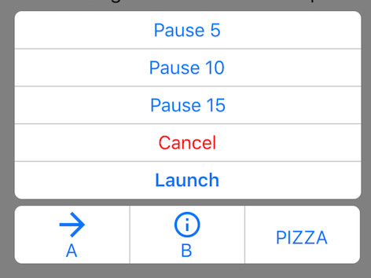
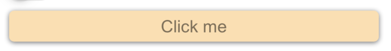
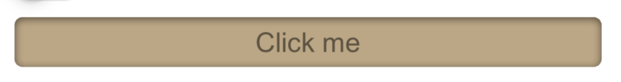
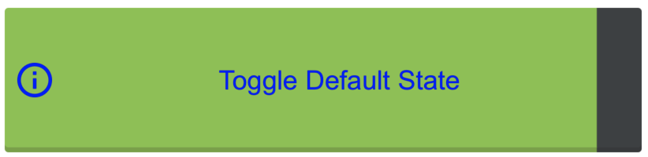
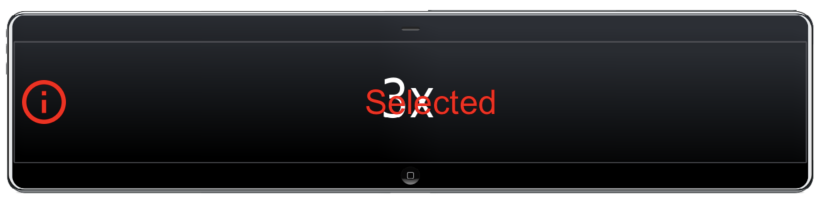

Using Forms9Patch Button Elements
Background
I often say Forms9Patch was originally written for the purpose of having NinePatch images in Xamarin.Forms. That's not completely true. I wanted NinePatch images because I had used them in Android as the background image for device independent buttons. Quite frankly,what I really wanted was SVG backgrounds but all the pieces to do that were not available at that time. Fortunately, things have changed and now - via Forms9Patch - I have both!
Another missing element for Android and Xamarin.Forms is a SegmentedControl (like iOS has). Building a SegmentedControl was a bit painful for me in Android and I dreaded what it would take in Xamarin. However, when I actually rolled up my sleeves and did it, I fell in love with what the Xamarin team had done. I was sold!
Overview
Forms9Patch has three button elements:
- Button
- StateButton¹
- SegmentedControl
All three buttons share a number of properties and behaviors for the purpose of giving you more design and functional options without more complexity.
Forms9Patch.Button
Forms9Patch.Button is the most basic, adding the following to what Xamarin.Forms.Button provides:
- Horizontal and vertical alignment of button's text
- Text and Background color for the selected state
- Outline and clip shape:
- Rectangle
- Square
- Circle
- Ellipse
- Obround
- Toggle behavior
- Background image
- Icon as an image or as HTML text
- Icon to text positioning:
- horizontal vs. vertical orientation
- icon before or after text
- spacing between icon and text
- Haptics (when available)
Forms9Patch.StateButton
Forms9Patch.StateButton further extends Forms9Patch.Button by adding the ability to toggle its properties as a function of its state. The states are:
- DefaultState
- PressingState
- SelectedState
- DisabledState
- DisabledAndSelectedState
NOTE ¹ : As of Xamarin.Forms 3+, I recommend not using Forms9Patch.StateButton. Rather, use Forms9Patch.Button in combination with Xamarin.Forms' new Visual State Manager. Visual State Manager is a great feature and I'm looking forward to using it!
Forms9Patch.SegmentedControl
iOS has a segmented control that, for the life of me, I don't know why isn't standard in Android, UWP, or Xamarin.Forms. It's just too useful. That being said, if I remember correctly, even the iOS segmented control doesn't support a vertical layout (please correct me if I'm wrong).

Forms9Patch.SegmentedControl provides for the following features:
- Orientation of the button list
- Toggle behavior
- Separator Width
- Horizontal and vertical alignment of button's text
- Text and Background color for the selected state
- Icon to text positioning:
- horizontal vs. vertical orientation
- icon before or after text
- spacing between icon and text
Using Forms9Patch's buttons
Shared Layout and Decoration Properties
The layout and decoration properties shared by all three Forms9Patch buttons are:
Outline/Background:
BackgroundColorSelectedBackgroundColor:BorderRadius: Alternatively,OutlineRadiusBorderWidth: Alternatively,OutlineWidthBorderColor: Alternatively,OutlineColorHasShadowPadding: The padding between the outline and the button's content (the icon and label)
Text
TextColorFontAttributesFontSizeFontFamily: the button's label's font family. Note: You can use the ResourceID of Embedded Resource fonts here!SelectedTextColor: the color of the button's text when selectedHorizontalTextAlignmentVerticalTextAlignmentLineBreakMode: See Xamarin.Forms.LineBreakModeAutoFit: Autofitting algorithm to be applied to button's label's text. See Label.Autofitting.Lines: The number of lines used for the label's text fitting. Again, see Label.Autofitting.- BackgroundBackgroundColorBackgroundImage: AForms9Patch.Imagethat will be used as the button's background.
Icon:
IconFontFamily: Used to specify the font family used for theIconTextproperty. Note: See Custom Fonts to see how to use an Embedded Resource font!TrailingIcon: Is the icon placed before or after the label?TintIcon: If the icon is a raster image, should the color of the non-transparent pixels be set toTextColor?HasTightSpacing: Iffalse, the icon will be positioned to the outside edge of the button. Iftrue, the icon will be positioned next to the label (separated bySpacing).
Button and StateButton unique properties
Additionally, the Button and StateButton elements have these properties:
Outline
Shape:ElementShape.Rectangle,ElementShape.Square,ElementShape.Circle,ElementShape.Ellipse, andElementShape.Obround. Controls the shape of both the border and the background clipping region.
Text
Text: plain text for the button's labelHtmlText: markup text for the button's label - an alternative toText
Icon
IconImage: AForms9Patch.Imageelement to be used as the button's icon image.IconText: An alternative toIconImage, enabling the use of Unicode characters or special font characters as button icons. Just like theHtmlTextproperty, this property will decode HTML markup, allowing you to specify colors, fonts and other attributes.Orientation: Is the icon and label arranged vertically or horizontally?Spacing: ifTightSpacingis true, the icon will be positionedSpacingpixels away from the label
SegmentedControl unique properties
The SegmentedControl has the following unique properties:
- Outline:
SeparatorWidth: Width of the separator between segments
- Text
SyncSegmentFontSizes: After autofitting the text in each segment to fit the available space, if this property is set totrue, then the SegmentedControl will set the FontSize of all the segments to be the same as the smallest fitted font size.
- Selection:
SelectedSegments: List of the selected segmentsSelectedIndexes: List of the indexes of the selected segmentsGroupToggleBehavior: How the buttons will behave after being selected. States: None, Radio, Multiselect;
- Layout:
IntraSegmentOrientation: Is the icon arranged Horizontally or Vertically relative to the label?IntraSegmentSpacing: WhenHasTightSpacing, how much space should be between segments?Orientation: Are the Segments arranged Horizontally or Vertically?
Segment Properties
The Segment element is used primarily to populate the SegmentedController and secondarily, to customize individual segments beyond the default values provided by the parent SegmentedController.
IconImage:Forms9Patch.Imageas the segment's optional image. It will be tinted either toFontColorwhen enabled and grey when disabled if the parentSegmentControl'sTintImage=trueand the image is a PNG with transparency.IconText: alternative to the ImageSource property. Used to specify HTML formatted text for button's icon. Great when used with Google's Material Font.IconFontFamily: Used to specify the font family used for theIconTextproperty. Note: You can use the ResourceID of Embedded Resource fonts here!Text: the segment's optional text.HtmlText: text formatted via subset of HTML tags. See the Using the HtmlLabel property section below for more information.FontColor: the color of the text when enabled. Disabled segmentS use a shade of grey determined by the DarkTheme property.FontAttributes: is the text bold or italics?IsSelected: Is the segment in the selected state? Note: Segment's parent's GroupToggleBehavior property must be Radio or MultiSelect for this to change in response to the segment being tapped.IsEnabled: Is the segment enabled?Orientation: Do you want the text and image placed image on top of text (vertical) or image to the left of text (horizontal)?
Events
Button, StateButton, and Segment events
Command: The ICommand to execute when the button/segment is pressed. NOTE: If a segment's parent's GroupToggleBehavior property is set to None, then this will fire anytime the segment is tapped. Otherwise, it will fire only when the segment transitions from unselected to selected.CommandParameter: The parameter used in ICommand calls.Tapped: EventHandler be called anytime a button/segment is tapped.Selected: EventHandler be called when a button/segment transitions from unselected to selected.LongPressing: EventHandler be called when a button/segment is being held down long enough to be considered a long press.LongPressed: EventHandler be called when a button/segment's long press has ended.
SegmentedControl events
SegmentTapped: Fired when one of the SegmentedControl's segments is tapped;SegmentSelected: Fired when one of the SegmentedControl's segments transitions to the Selected stateSegmentLongPressing: Fired when one of the SegmentedControl's segments is being held down long enough to be considered a long press.SegmentLongPressed:: Fired when one of the SegmentedControl's segments long press has ended.
Examples
Forms9Patch Button Example
var button = new Forms9Patch.Button
{
Text = "Click me",
ToggleBehavior = true,
BackgroundColor = Color.NavajoWhite, OutlineRadius = 5,
HasShadow=true,
};
| Unselected |  |
| Selected |  |
Forms9Patch StateButton example
<?xml version="1.0" encoding="UTF-8"?>
<ContentPage
xmlns="http://xamarin.com/schemas/2014/forms"
xmlns:x="http://schemas.microsoft.com/winfx/2009/xaml"
xmlns:f9p="clr-namespace:Forms9Patch;assembly=Forms9Patch"
xmlns:local="clr-namespace:Forms9PatchDemo;assembly=Forms9PatchDemo"
x:Class="Forms9PatchDemo.XamlSingleStateButtonPage"
Padding="5, 20, 5, 5">
<StackLayout>
<f9p:StateButton ToggleBehavior="true" HeightRequest="80" Alignment="Start">
<f9p:StateButton.DefaultState>
<f9p:ButtonState Text="Toggle Default State" TextColor="Blue">
<f9p:ButtonState.BackgroundImage>
<f9p:Image Source="{local:ImageMultiResource Forms9PatchDemo.Resources.button}"/>
</f9p:ButtonState.BackgroundImage>
<f9p:ButtonState.IconImage>
<f9p:Image Source="{local:ImageMultiResource Forms9PatchDemo.Resources.Info}"/>
</f9p:ButtonState.IconImage>
</f9p:ButtonState>
</f9p:StateButton.DefaultState>
<f9p:StateButton.SelectedState>
<f9p:ButtonState TextColor="Red" Text="Selected" >
<f9p:ButtonState.BackgroundImage>
<f9p:Image Source="{local:ImageMultiResource Forms9PatchDemo.Resources.image}"/>
</f9p:ButtonState.BackgroundImage>
</f9p:ButtonState>
</f9p:StateButton.SelectedState>
</f9p:StateButton>
<Label x:Name="label"/>
</StackLayout>
</ContentPage>
| Unselected |  |
| Selected |  |
Forms9Patch SegmentedControl example
<?xml version="1.0" encoding="UTF-8"?>
<ContentPage
xmlns="http://xamarin.com/schemas/2014/forms"
xmlns:x="http://schemas.microsoft.com/winfx/2009/xaml"
x:Class="Forms9PatchDemo.XamlSegmentedControlPage"
xmlns:f9p="clr-namespace:Forms9Patch;assembly=Forms9Patch"
xmlns:local="clr-namespace:Forms9PatchDemo;assembly=Forms9PatchDemo"
BackgroundColor = "Gray"
Padding = "40"
>
<ContentPage.Content>
<StackLayout>
<Label Text="SegmentedControl Example" TextColor="Black"/>
<f9p:SegmentedControl BackgroundColor="White" FontSize="16" TextColor="#0076FF" Orientation="Vertical" OutlineColor="#CCC" OutlineWidth="0" SeparatorWidth="1" OutlineRadius="6" Padding="5" GroupToggleBehavior="Multiselect">
<f9p:Segment Text="Pause 5"/>
<f9p:Segment Text="Pause 10"/>
<f9p:Segment Text="Pause 15"/>
<f9p:Segment Text="Cancel" TextColor="Red"/>
<f9p:Segment Text="Launch" FontAttributes="Bold"/>
</f9p:SegmentedControl>
<f9p:SegmentedControl BackgroundColor="White" Padding="5" FontSize="16" TextColor="#0076FF" OutlineColor="#CCC" OutlineWidth="0" SeparatorWidth="1" OutlineRadius="6" >
<f9p:Segment Text="A" Orientation="Vertical">
<f9p:Segment.IconImage>
<f9p:Image Source="{local:ImageMultiResource Forms9PatchDemo.Resources.ArrowR}"/>
</f9p:Segment.IconImage>
</f9p:Segment>
<f9p:Segment Text="B" Orientation="Vertical">
<f9p:Segment.IconImage>
<f9p:Image Source="{local:ImageMultiResource Forms9PatchDemo.Resources.Info}"/>
</f9p:Segment.IconImage>
</f9p:Segment>
<f9p:Segment Text="PIZZA"/>
</f9p:SegmentedControl>
</StackLayout>
</ContentPage.Content>
</ContentPage>